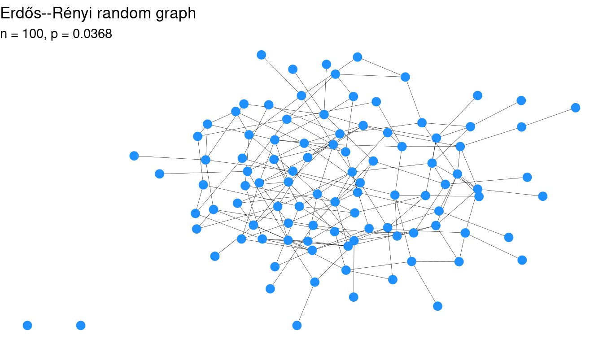
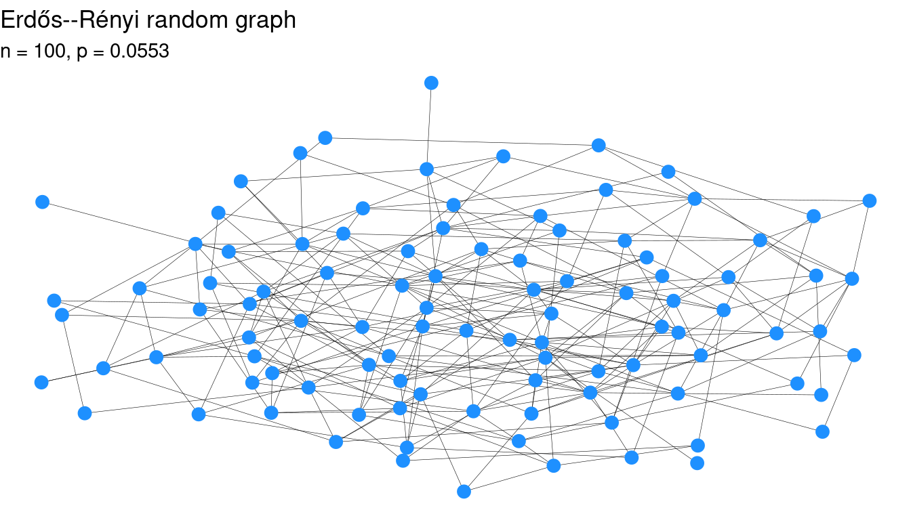
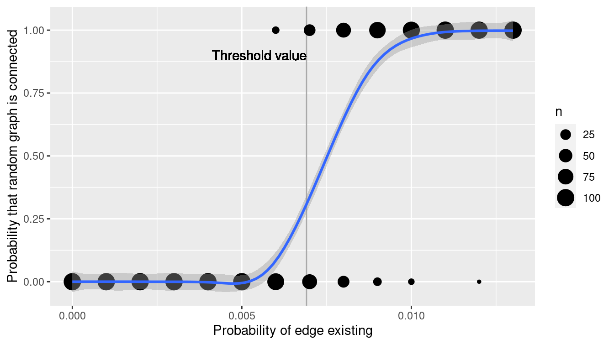
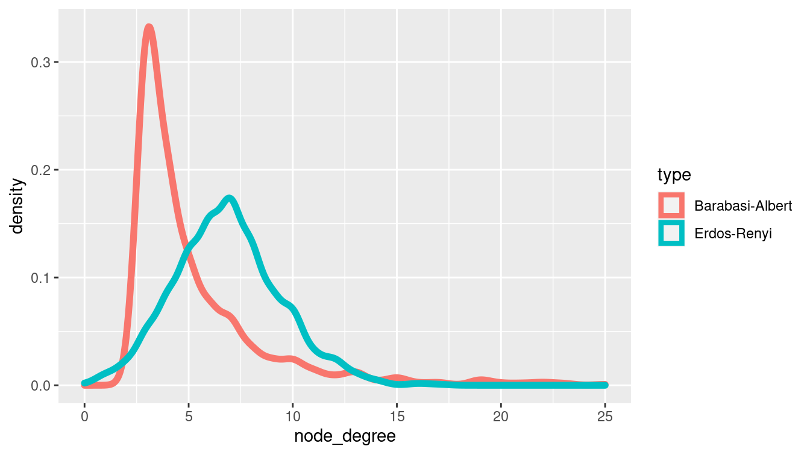
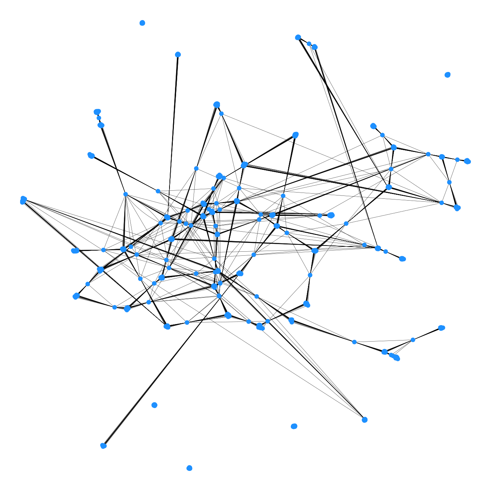
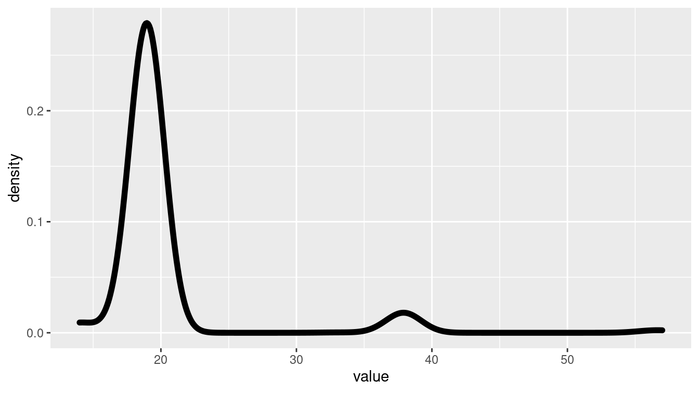
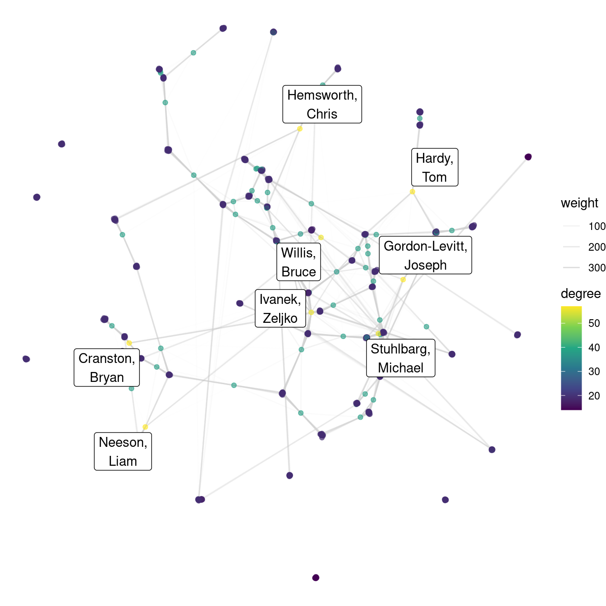
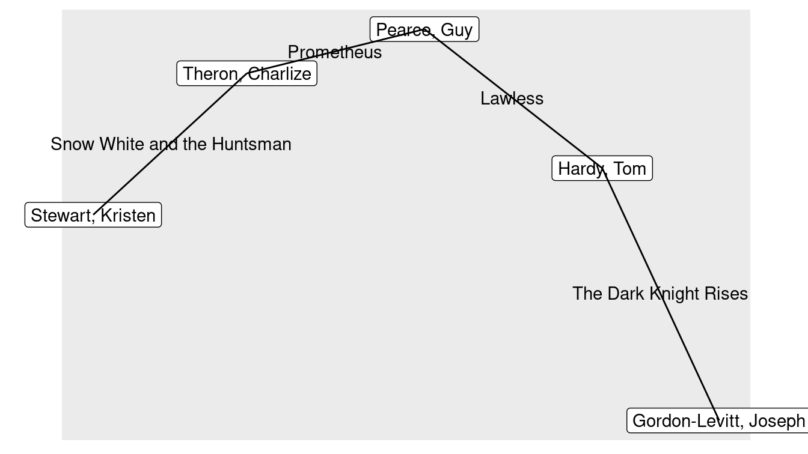
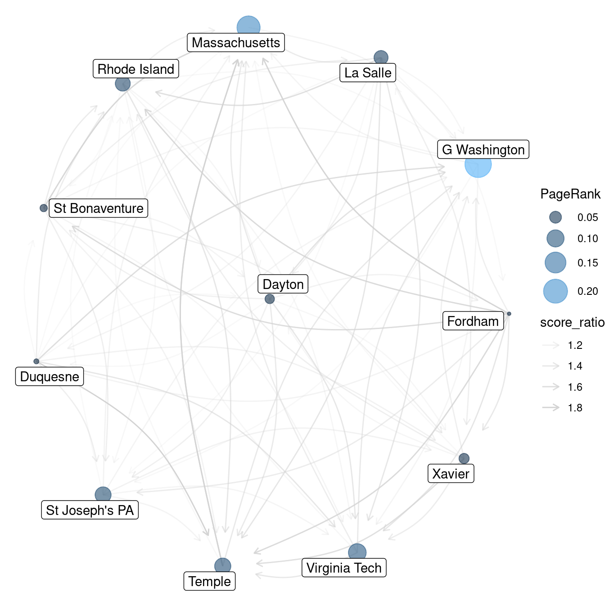

Chapter 20 Network science
Network science is an emerging interdisciplinary field that studies the properties of large and complex networks. Network scientists are interested in both theoretical properties of networks (e.g., mathematical models for degree distribution) and data-based discoveries in real networks (e.g., the distribution of the number of friends on Facebook).
20.1 Introduction to network science
20.1.1 Definitions
The roots of network science are in the mathematical discipline of graph theory. There are a few basic definitions that we need before we can proceed.
A graph \(G=(V,E)\) is simply a set of vertices (or nodes) \(V\), and a set of edges (or links, or even ties) \(E\) between those nodes. It may be more convenient to think about a graph as being a network. For example, in a network model of Facebook, each user is a vertex and each friend relation is an edge connecting two users. Thus, one can think of Facebook as a social network, but the underlying mathematical structure is just a graph. Discrete mathematicians have been studying graphs since Leonhard Euler posed the Seven Bridges of Königsberg problem in 1736 (Euler 1953).
Edges in graphs can be directed or undirected. The difference is whether the relationship is mutual or one-sided. For example, edges in the Facebook social network are undirected, because friendship is a mutual relationship. Conversely, edges in Twitter are directed, since you may follow someone who does not necessarily follow you.
Edges (or less commonly, vertices) may be weighted. The value of the weight represents some quantitative measure. For example, an airline may envision its flight network as a graph, in which each airport is a node, and edges are weighted according to the distance (in miles) from one airport to another. (If edges are unweighted, this is equivalent to setting all weights to 1.)
A path is a non-self-intersecting sequence of edges that connect two vertices. More formally, a path is a special case of a walk, which does allow self-intersections (i.e., a vertex may appear in the walk more than once). There may be many paths, or no paths, between two vertices in a graph, but if there are any paths, then there is at least one shortest path (or geodesic). The notion of a shortest path is dependent upon a distance measure in the graph (usually, just the number of edges, or the sum of the edge weights). A graph is connected if there is a path between all pairs of vertices.
The diameter of a graph is the length of the longest geodesic (i.e., the longest shortest [sic] path) between any pairs of vertices. The eccentricity of a vertex \(v\) in a graph is the length of the longest geodesic starting at that vertex. Thus, in some sense a vertex with a low eccentricity is more central to the graph.
In general, graphs do not have coordinates. Thus, there is no right way to draw a graph. Visualizing a graph is more art than science, but several graph layout algorithms are popular.
Centrality: Since graphs don’t have coordinates, there is no obvious measure of centrality. That is, it is frequently of interest to determine which nodes are most “central” to the network, but there are many different notions of centrality. We will discuss three:
- Degree centrality: The degree of a vertex within a graph is the number of edges incident to it. Thus, the degree of a node is a simple measure of centrality in which more highly connected nodes rank higher. President Obama has almost 100 million followers on Twitter, whereas the vast majority of users have fewer than a thousand. Thus, the degree of the vertex representing President Obama in the Twitter network is in the millions, and he is more central to the network in terms of degree centrality.
- Betweenness centrality: If a vertex \(v\) is more central to a graph, then you would suspect that more shortest paths between vertices would pass through \(v\). This is the notion of betweenness centrality. Specifically, let \(\sigma(s,t)\) be the number of geodesics between vertices \(s\) and \(t\) in a graph. Let \(\sigma_v(s,t)\) be the number of shortest paths between \(s\) and \(t\) that pass through \(v\). Then the betweenness centrality for \(v\) is the sum of the fractions \(\sigma_v(s,t) / \sigma(s,t)\) over all possible pairs \((s,t)\). This figure (\(C_B(v)\)) is often normalized by dividing by the number of pairs of vertices that do not include \(v\) in the graph. \[ C_B(v) = \frac{2}{(n-1)(n-2)} \sum_{s,t \in V \setminus \{v\}} \frac{\sigma_v(s,t)}{\sigma(s,t)} \,, \] where \(n\) is the number of vertices in the graph. Note that President Obama’s high degree centrality would not necessarily translate into a high betweenness centrality.
- Eigenvector centrality: This is the essence of Google’s PageRank algorithm, which we will discuss in Section 20.3. Note that there are also notions of edge centrality that we will not discuss further.
In a social network, it is usually believed that if Alice and Bob are friends, and Alice and Carol are friends, then it is more likely than it otherwise would be that Bob and Carol are friends. This is the notion of triadic closure, and it leads to measurements of clusters in real-world networks.
20.1.2 A brief history of network science
As noted above, the study of graph theory began in the 1700s, but the inception of the field of network science was a paper published in 1959 by the legendary Paul Erdős and Alfréd Rényi (Erdős and Rényi 1959). Erdős and Rényi proposed a model for a random graph, where the number of vertices \(n\) is fixed, but the probability of an edge connecting any two vertices is \(p\). What do such graphs look like? What properties do they have? It is obvious that if \(p\) is very close to 0, then the graph will be almost empty, while conversely, if \(p\) is very close to 1, then the graph will be almost complete. Erdős and Rényi unexpectedly proved that for many graph properties \(c\) (e.g., connectedness, the existence of a cycle of a certain size, etc.), there is a threshold function \(p_c(n)\) around which the structure of the graph seems to change rapidly. That is, for values of \(p\) slightly less than \(p_c(n)\), the probability that a random graph is connected is close to zero, while for values of \(p\) just a bit larger than \(p_c(n)\), the probability that a random graph is connected is close to one (see Figure 20.1).
This somewhat bizarre behavior has been called the phase transition in allusion to physics, because it evokes at a molecular level how solids turn to liquids and liquids turn to gasses. When temperatures are just above 32 degrees Fahrenheit, water is a liquid, but at just below 32 degrees, it becomes a solid.
library(tidyverse)
library(mdsr)
library(tidygraph)
library(ggraph)
set.seed(21)
n <- 100
p_star <- log(n)/n
plot_er <- function(n, p) {
g <- play_erdos_renyi(n, p, directed = FALSE)
ggraph(g) +
geom_edge_fan(width = 0.1) +
geom_node_point(size = 3, color = "dodgerblue") +
labs(
title = "Erdős--Rényi random graph",
subtitle = paste0("n = ", n, ", p = ", round(p, 4))
) +
theme_void()
}
plot_er(n, p = 0.8 * p_star)
plot_er(n, p = 1.2 * p_star)

Figure 20.1: Two Erdős–Rényi random graphs on 100 vertices with different values of \(p\). The graph at left is not connected, but the graph at right is. The value of \(p\) hasn’t changed by much.
While many properties of the phase transition have been proven mathematically, they can also be illustrated using simulation (see Chapter 13).
Throughout this chapter, we use the tidygraph package for constructing and manipulating graphs39, and the ggraph package for plotting graphs as ggplot2 objects.
The tidygraph package provides the play_erdos_renyi() function for simulating Erdős–Rényi random graphs. In Figure 20.2, we show how the phase transition for connectedness appears around the threshold value of \(p(n) = \log{n}/n\). With \(n=1000\), we have \(p(n) =\) 0.007. Note how quickly the probability of being connected increases near the value of the threshold function.
n <- 1000
p_star <- log(n)/n
p <- rep(seq(from = 0, to = 2 * p_star, by = 0.001), each = 100)
sims <- tibble(n, p) %>%
mutate(
g = map2(n, p, play_erdos_renyi, directed = FALSE),
is_connected = map_int(g, ~with_graph(., graph_is_connected()))
)
ggplot(data = sims, aes(x = p, y = is_connected)) +
geom_vline(xintercept = p_star, color = "darkgray") +
geom_text(
x = p_star, y = 0.9, label = "Threshold value", hjust = "right"
) +
labs(
x = "Probability of edge existing",
y = "Probability that random graph is connected"
) +
geom_count() +
geom_smooth()
Figure 20.2: Simulation of connectedness of ER random graphs on 1,000 vertices.
This surprising discovery demonstrated that random graphs had interesting properties. Yet it was less clear whether the Erdős–Rényi random graph model could produce graphs whose properties were similar to those that we observe in reality. That is, while the Erdős–Rényi random graph model was interesting in its own right, did it model reality well?
The answer turned out to be “no,” or at least, “not really.” In particular, Watts and Strogatz (1998) identified two properties present in real-world networks that were not present in Erdős–Rényi random graphs: triadic closure and large hubs. As we saw above, triadic closure is the idea that two people with a friend in common are likely to be friends themselves. Real-world (not necessarily social) networks tend to have this property, but Erdős–Rényi random graphs do not. Similarly, real-world networks tend to have large hubs—individual nodes with many edges. More specifically, whereas the distribution of the degrees of vertices in Erdős–Rényi random graphs can be shown to follow a Poisson distribution, in real-world networks the distribution tends to be flatter. The Watts–Strogatz model provides a second random graph model that produces graphs more similar to those we observe in reality.
g <- play_smallworld(n_dim = 2, dim_size = 10, order = 5, p_rewire = 0.05)In particular, many real-world networks, including not only social networks but also the World Wide Web, citation networks, and many others, have a degree distribution that follows a power-law. These are known as scale-free networks and were popularized by Albert-László Barabási in two widely-cited papers R. Albert and Barabási (2002) and his readable book (Barabási and Frangos 2014). Barabási and Albert proposed a third random graph model based on the notion of preferential attachment. Here, new nodes are connected to old nodes based on the existing degree distribution of the old nodes. Their model produces the power-law degree distribution that has been observed in many different real-world networks.
Here again, we can illustrate these properties using simulation.
The play_barabasi_albert() function in tidygraph will allow us to simulate a Barabási–Albert random graph.
Figure 20.3 compares the degree distribution between an Erdős–Rényi random graph and a Barabási–Albert random graph.
g1 <- play_erdos_renyi(n, p = log(n)/n, directed = FALSE)
g2 <- play_barabasi_albert(n, power = 1, growth = 3, directed = FALSE)
summary(g1)IGRAPH 31a3c1d U--- 1000 3419 -- Erdos renyi (gnp) graph
+ attr: name (g/c), type (g/c), loops (g/l), p (g/n)summary(g2)IGRAPH 88bc59e U--- 1000 2994 -- Barabasi graph
+ attr: name (g/c), power (g/n), m (g/n), zero.appeal (g/n),
| algorithm (g/c)d <- tibble(
type = c("Erdos-Renyi", "Barabasi-Albert"),
graph = list(g1, g2)
) %>%
mutate(node_degree = map(graph, ~with_graph(., centrality_degree()))) %>%
unnest(node_degree)
ggplot(data = d, aes(x = node_degree, color = type)) +
geom_density(size = 2) +
scale_x_continuous(limits = c(0, 25))
Figure 20.3: Degree distribution for two random graphs.
Network science is a very active area of research, with interesting unsolved problems for data scientists to investigate.
20.2 Extended example: Six degrees of Kristen Stewart
In this extended example, we will explore a fun application of network science to Hollywood movies. The notion of Six Degrees of Separation was conjectured by a Hungarian network theorist in 1929, and later popularized by a play (and movie starring Will Smith). Stanley Milgram’s famous letter-mailing small-world experiment supposedly lent credence to the idea that all people are connected by relatively few “social hops” (Travers and Milgram 1969). That is, we are all part of a social network with a relatively small diameter (as small as 6).
Two popular incarnations of these ideas are the notion of an Erdős number and the Kevin Bacon game. The question in each case is the same: How many hops are you away from Paul Erdős (or Kevin Bacon? The former is popular among academics (mathematicians especially), where edges are defined by co-authored papers. Ben’s Erdős number is three, since he has co-authored a paper with Amotz Bar–Noy, who has co-authored a paper with Noga Alon, who co-authored a paper with Erdős. According to MathSciNet, Nick’s Erdős number is four (through Ben given (B. S. Baumer et al. 2014); but also through Nan Laird, Fred Mosteller, and Persi Diaconis), and Danny’s is four (also through Ben). These data reflect the reality that Ben’s research is “closer” to Erdős’s, since he has written about network science (Bogdanov et al. 2013; Ben S. Baumer et al. 2015; Basu et al. 2015; B. Baumer, Basu, and Bar-Noy 2011) and graph theory (Benjamin S. Baumer, Wei, and Bloom 2016). Similarly, the idea is that in principle, every actor in Hollywood can be connected to Kevin Bacon in at most six movie hops. We’ll explore this idea using the Internet Movie Database (IMDB.com 2013).
20.2.1 Collecting Hollywood data
We will populate a Hollywood network using actors in the IMDb. In this network, each actor is a node, and two actors share an edge if they have ever appeared in a movie together. Our goal will be to determine the centrality of Kevin Bacon.
First, we want to determine the edges, since we can then look up the node information based on the edges that are present.
One caveat is that these networks can grow very rapidly (since the number of edges is \(O(n^2)\), where \(n\) is the number of vertices).
For this example, we will be conservative by including popular (at least 150,000 ratings) feature films (i.e., kind_id equal to 1) in 2012, and we will consider only the top-20 credited roles in each film.
To retrieve the list of edges, we need to consider all possible cast assignment pairs.
To get this list, we start by forming all total pairs using the CROSS JOIN operation in MySQL (see Chapter 15), which has no direct dplyr equivalent.
Thus, in this case we will have to actually write the SQL code.
Note that we filter this list down to the unique pairs, which we can do by only including pairs where person_id from the first table is strictly less than person_id from the second table.
The result of the following query will come into R as the object E.
library(mdsr)
db <- dbConnect_scidb("imdb")SELECT a.person_id AS src, b.person_id AS dest,
a.movie_id,
a.nr_order * b.nr_order AS weight,
t.title, idx.info AS ratings
FROM imdb.cast_info AS a
CROSS JOIN imdb.cast_info AS b USING (movie_id)
LEFT JOIN imdb.title AS t ON a.movie_id = t.id
LEFT JOIN imdb.movie_info_idx AS idx ON idx.movie_id = a.movie_id
WHERE t.production_year = 2012 AND t.kind_id = 1
AND info_type_id = 100 AND idx.info > 150000
AND a.nr_order <= 20 AND b.nr_order <= 20
AND a.role_id IN (1,2) AND b.role_id IN (1,2)
AND a.person_id < b.person_id
GROUP BY src, dest, movie_idE <- E %>%
mutate(ratings = parse_number(ratings))
glimpse(E)Rows: 10,223
Columns: 6
$ src <int> 6388, 6388, 6388, 6388, 6388, 6388, 6388, 6388, 6388, 638…
$ dest <int> 405570, 445466, 688358, 722062, 830618, 838704, 960997, 1…
$ movie_id <int> 4590482, 4590482, 4590482, 4590482, 4590482, 4590482, 459…
$ weight <dbl> 52, 13, 143, 234, 260, 208, 156, 247, 104, 130, 26, 182, …
$ title <chr> "Zero Dark Thirty", "Zero Dark Thirty", "Zero Dark Thirty…
$ ratings <dbl> 231992, 231992, 231992, 231992, 231992, 231992, 231992, 2…
We have also computed a weight variable that we can use to weight the edges in the resulting graph. In this case, the weight is based on the order in which each actor appears in the credits. So a ranking of 1 means that the actor had top billing. These weights will be useful because a higher order in the credits usually means more screen time.
E %>%
summarize(
num_rows = n(),
num_titles = n_distinct(title)
) num_rows num_titles
1 10223 55Our query resulted in 10,223 connections between 55 films. We can see that Batman: The Dark Knight Rises received the most user ratings on IMDb.
movies <- E %>%
group_by(movie_id) %>%
summarize(title = max(title), N = n(), numRatings = max(ratings)) %>%
arrange(desc(numRatings))
movies# A tibble: 55 × 4
movie_id title N numRatings
<int> <chr> <int> <dbl>
1 4339115 The Dark Knight Rises 190 1258255
2 3519403 Django Unchained 190 1075891
3 4316706 The Avengers 190 1067306
4 4368646 The Hunger Games 190 750674
5 4366574 The Hobbit: An Unexpected Journey 190 681957
6 4224391 Silver Linings Playbook 190 577500
7 4231376 Skyfall 190 557652
8 4116220 Prometheus 190 504980
9 4300124 Ted 190 504893
10 3298411 Argo 190 493001
# … with 45 more rowsNext, we should gather some information about the vertices in this graph. We could have done this with another JOIN in the original query, but doing it now will be more efficient. (Why? See the cross-join exercise.) In this case, all we need is each actor’s name and IMDb identifier.
actor_ids <- unique(c(E$src, E$dest))
V <- db %>%
tbl("name") %>%
filter(id %in% actor_ids) %>%
select(actor_id = id, actor_name = name) %>%
collect() %>%
arrange(actor_id) %>%
mutate(id = row_number())
glimpse(V)Rows: 1,010
Columns: 3
$ actor_id <int> 6388, 6897, 8462, 16644, 17039, 18760, 28535, 33799, 42…
$ actor_name <chr> "Abkarian, Simon", "Aboutboul, Alon", "Abtahi, Omid", "…
$ id <int> 1, 2, 3, 4, 5, 6, 7, 8, 9, 10, 11, 12, 13, 14, 15, 16, …20.2.2 Building the Hollywood network
To build a graph, we specify the edges, whether we want them to be directed, and add information about the vertices.
edges <- E %>%
left_join(select(V, from = id, actor_id), by = c("src" = "actor_id")) %>%
left_join(select(V, to = id, actor_id), by = c("dest" = "actor_id"))
g <- tbl_graph(nodes = V, directed = FALSE, edges = edges)
summary(g)IGRAPH 62d5731 U-W- 1010 10223 --
+ attr: actor_id (v/n), actor_name (v/c), id (v/n), src (e/n), dest
| (e/n), movie_id (e/n), weight (e/n), title (e/c), ratings (e/n)From the summary() command above, we can see that we have 1,010 actors and 10,223 edges between them. Note that we have associated metadata with each edge: namely, information about the movie that gave rise to the edge, and the aforementioned weight metric based on the order in the credits where each actor appeared. (The idea is that top-billed stars are likely to appear on screen longer, and thus have more meaningful interactions with more of the cast.)
With our network intact, we can visualize it. There are many graphical parameters that you may wish to set, and the default choices are not always good. In this case we have 1,010 vertices, so we’ll make them small, and omit labels. Figure 20.4 displays the results.
ggraph(g, 'drl') +
geom_edge_fan(width = 0.1) +
geom_node_point(color = "dodgerblue") +
theme_void()
Figure 20.4: Visualization of Hollywood network for popular 2012 movies.
It is easy to see the clusters based on movies, but you can also see a few actors who have appeared in multiple movies, and how they tend to be more “central” to the network. If an actor has appeared in multiple movies, then it stands to reason that they will have more connections to other actors. This is captured by degree centrality.
g <- g %>%
mutate(degree = centrality_degree())
g %>%
as_tibble() %>%
arrange(desc(degree)) %>%
head()# A tibble: 6 × 4
actor_id actor_name id degree
<int> <chr> <int> <dbl>
1 502126 Cranston, Bryan 113 57
2 891094 Gordon-Levitt, Joseph 228 57
3 975636 Hardy, Tom 257 57
4 1012171 Hemsworth, Chris 272 57
5 1713855 Neeson, Liam 466 57
6 1114312 Ivanek, Zeljko 304 56There are a number of big name actors on this list who appeared in multiple movies in 2012. Why does Bryan Cranston have so many connections? The following quick function will retrieve the list of movies for a particular actor.
show_movies <- function(g, id) {
g %>%
activate(edges) %>%
as_tibble() %>%
filter(src == id | dest == id) %>%
group_by(movie_id) %>%
summarize(title = first(title), num_connections = n())
}
show_movies(g, 502126)# A tibble: 3 × 3
movie_id title num_connections
<int> <chr> <int>
1 3298411 Argo 19
2 3780482 John Carter 19
3 4472483 Total Recall 19Cranston appeared in all three of these movies. Note however, that the distribution of degrees is not terribly smooth (see Figure 20.5). That is, the number of connections that each actor has appears to be limited to a few discrete possibilities. Can you think of why that might be?
ggplot(data = enframe(igraph::degree(g)), aes(x = value)) +
geom_density(size = 2)
Figure 20.5: Distribution of degrees for actors in the Hollywood network of popular 2012 movies.
We use the ggraph package, which provides geom_node_*() and geom_edge_*() functions for plotting graphs directly with ggplot2. (Alternative plotting packages include ggnetwork, geomnet, and GGally)
hollywood <- ggraph(g, layout = 'drl') +
geom_edge_fan(aes(alpha = weight), color = "lightgray") +
geom_node_point(aes(color = degree), alpha = 0.6) +
scale_edge_alpha_continuous(range = c(0, 1)) +
scale_color_viridis_c() +
theme_void()We don’t want to show vertex labels for everyone, because that would result in an unreadable mess. However, it would be nice to see the highly central actors. Figure 20.6 shows our completed plot.
The transparency of the edges is scaled relatively to the weight measure that we computed earlier.
The ggnetwork() function transforms our igraph object into a data frame, from which the geom_nodes() and geom_edges() functions can map variables to aesthetics. In this case, since there are so many edges, we use the scale_size_continuous() function to make the edges very thin.
hollywood +
geom_node_label(
aes(
filter = degree > 40,
label = str_replace_all(actor_name, ", ", ",\n")
),
repel = TRUE
)
Figure 20.6: The Hollywood network for popular 2012 movies. Color is mapped to degree centrality.
20.2.3 Building a Kristen Stewart oracle
Degree centrality does not take into account the weights on the edges. If we want to emphasize the pathways through leading actors, we could consider betweenness centrality.
g <- g %>%
mutate(btw = centrality_betweenness(weights = weight, normalized = TRUE))
g %>%
as_tibble() %>%
arrange(desc(btw)) %>%
head(10)# A tibble: 10 × 5
actor_id actor_name id degree btw
<int> <chr> <int> <dbl> <dbl>
1 3945132 Stewart, Kristen 964 38 0.236
2 891094 Gordon-Levitt, Joseph 228 57 0.217
3 3346548 Kendrick, Anna 857 38 0.195
4 135422 Bale, Christian 27 19 0.179
5 76481 Ansari, Aziz 15 19 0.176
6 558059 Day-Lewis, Daniel 135 19 0.176
7 1318021 LaBeouf, Shia 363 19 0.156
8 2987679 Dean, Ester 787 38 0.152
9 2589137 Willis, Bruce 694 56 0.141
10 975636 Hardy, Tom 257 57 0.134show_movies(g, 3945132)# A tibble: 2 × 3
movie_id title num_connections
<int> <chr> <int>
1 4237818 Snow White and the Huntsman 19
2 4436842 The Twilight Saga: Breaking Dawn - Part 2 19Notice that Kristen Stewart has the highest betweenness centrality, while Joseph Gordon-Levitt and Tom Hardy (and others) have the highest degree centrality. Moreover, Christian Bale has the third-highest betweenness centrality despite appearing in only one movie. This is because he played the lead in The Dark Knight Rises, the movie responsible for the most edges. Most shortest paths through The Dark Knight Rises pass through Christian Bale.
If Kristen Stewart (imdbId 3945132) is very central to this network, then perhaps instead of a Bacon number, we could consider a Stewart number.
Charlize Theron’s Stewart number is obviously 1, since they appeared in Snow White and the Huntsman together:
ks <- V %>%
filter(actor_name == "Stewart, Kristen")
ct <- V %>%
filter(actor_name == "Theron, Charlize")
g %>%
convert(to_shortest_path, from = ks$id, to = ct$id)# A tbl_graph: 2 nodes and 1 edges
#
# An unrooted tree
#
# Node Data: 2 × 6 (active)
actor_id actor_name id degree btw .tidygraph_node_index
<int> <chr> <int> <dbl> <dbl> <int>
1 3945132 Stewart, Kristen 964 38 0.236 964
2 3990819 Theron, Charlize 974 38 0.0940 974
#
# Edge Data: 1 × 9
from to src dest movie_id weight title ratings .tidygraph_edge…
<int> <int> <int> <int> <int> <dbl> <chr> <dbl> <int>
1 1 2 3945132 3.99e6 4237818 3 Snow … 243824 10198On the other hand, her distance from Joseph Gordon-Levitt is 5. The interpretation here is that Joseph Gordon-Levitt was in Batman: The Dark Knight Rises with Tom Hardy, who was in Lawless with Guy Pearce, who was in Prometheus with Charlize Theron, who was in Snow White and the Huntsman with Kristen Stewart. We show this graphically in Figure 20.7.
set.seed(47)
jgl <- V %>%
filter(actor_name == "Gordon-Levitt, Joseph")
h <- g %>%
convert(to_shortest_path, from = jgl$id, to = ks$id, weights = NA)
h %>%
ggraph('gem') +
geom_node_point() +
geom_node_label(aes(label = actor_name)) +
geom_edge_fan2(aes(label = title)) +
coord_cartesian(clip = "off") +
theme(plot.margin = margin(6, 36, 6, 36))
Figure 20.7: Subgraph showing a shortest path through the Hollywood network from Joseph Gordon-Levitt to Kristen Stewart.
Note, however, that these shortest paths are not unique. In fact, there are 9 shortest paths between Kristen Stewart and Joseph Gordon-Levitt, each having a length of 5.
igraph::all_shortest_paths(g, from = ks$id, to = jgl$id, weights = NA) %>%
pluck("res") %>%
length()[1] 9As we saw in Figure 20.6, our Hollywood network is not connected, and thus its diameter is infinite. However, the diameter of the largest connected component can be computed. This number (in this case, 10) indicates how many hops separate the two most distant actors in the network.
igraph::diameter(g, weights = NA)[1] 10g %>%
mutate(eccentricity = node_eccentricity()) %>%
filter(actor_name == "Stewart, Kristen")# A tbl_graph: 1 nodes and 0 edges
#
# An unrooted tree
#
# Node Data: 1 × 6 (active)
actor_id actor_name id degree btw eccentricity
<int> <chr> <int> <dbl> <dbl> <dbl>
1 3945132 Stewart, Kristen 964 38 0.236 6
#
# Edge Data: 0 × 8
# … with 8 variables: from <int>, to <int>, src <int>, dest <int>,
# movie_id <int>, weight <dbl>, title <chr>, ratings <dbl>On the other hand, we note that Kristen Stewart’s eccentricity is 6. This means that there is no actor in the connected part of the network who is more than 6 hops away from Kristen Stewart. Six degrees of separation indeed!
20.3 PageRank
For many readers, it may be difficult (or impossible) to remember what search engines on the Web were like before Google. Search engines such as Altavista, Web Crawler, Excite, and Yahoo! vied for supremacy, but none returned results that were of comparable use to the ones we get today. Frequently, finding what you wanted required sifting through pages of slow-to-load links.
Consider the search problem. A user types in a search query consisting of one or more words or terms. Then the search engine produces an ordered list of Web pages ranked by their relevance to that search query. How would you instruct a computer to determine the relevance of a Web page to a query?
This problem is not trivial. Most pre-Google search engines worked by categorizing the words on every Web page, and then determining—based on the search query—which pages were most relevant to that query.
One problem with this approach is that it relies on each Web designer to have the words on its page accurately reflect the content. Naturally, advertisers could easily manipulate search engines by loading their pages with popular search terms, written in the same color as the background (making them invisible to the user), regardless of whether those words were related to the actual content of the page. So naïve search engines might rank these pages more highly, even though they were not relevant to the user.
Google conquered search by thinking about the problem in a fundamentally different way and taking advantage of the network structure of the World Wide Web. The web is a directed graph, in which each webpage (URL) is a node, and edges reflect links from one webpage to another. In 1998, Sergey Brin and Larry Page—while computer science graduate students at Stanford University—developed a centrality measure called PageRank that formed the basis of Google’s search algorithms (Page et al. 1999). The algorithm led to search results that were so much better than those of its competitors that Google quickly swallowed the entire search market, and is now one of the world’s largest companies. The key insight was that one could use the directed links on the Web as a means of “voting” in a way that was much more difficult to exploit. That is, advertisers could only control links on their pages, but not links to their pages from other sites.
20.3.1 Eigenvector centrality
Computing PageRank is a rather simple exercise in linear algebra. It is an example of a Markov process. Suppose there are \(n\) webpages on the Web. Let \(\mathbf{v}_0 = \mathbf{1}/n\) be a vector that gives the initial probability that a randomly chosen Web surfer will be on any given page. In the absence of any information about this user, there is an equal probability that they might be on any page.
But for each of these \(n\) webpages, we also know to which pages it links. These are outgoing directed edges in the Web graph. We assume that a random surfer will follow each link with equal probability, so if there are \(m_i\) outgoing links on the \(i^{th}\) webpage, then the probability that the random surfer goes from page \(i\) to page \(j\) is \(p_{ij} = 1 / m_i\). Note that if the \(i^{th}\) page doesn’t link to the \(j^{th}\) page, then \(p_{ij} = 0\). In this manner, we can form the \(n \times n\) transition matrix \(\mathbf{P}\), wherein each entry describes the probability of moving from page \(i\) to page \(j\).
The product \(\mathbf{P} \mathbf{v}_0 = \mathbf{v}_1\) is a vector where \(v_{1i}\) indicates the probability of being at the \(i^{th}\) webpage, after picking a webpage uniformly at random to start, and then clicking on one link chosen at random (with equal probability). The product \(\mathbf{P} \mathbf{v}_1 = \mathbf{P}^2 \mathbf{v}_0\) gives us the probabilities after two clicks, etc. It can be shown mathematically that if we continue to iterate this process, then we will arrive at a stationary distribution \(\mathbf{v}^*\) that reflects the long-term probability of being on any given page. Each entry in that vector then represents the popularity of the corresponding webpage—\(\mathbf{v}^*\) is the PageRank of each webpage.40 Because \(\mathbf{v}^*\) is an eigenvector of the transition matrix (since \(\mathbf{P} \mathbf{v}^* = \mathbf{v}^*\)), this measure of centrality is known as eigenvector centrality. It was, in fact, developed earlier, but Page and Brin were the first to apply the idea to the World Wide Web for the purpose of search.
The success of PageRank has led to its being applied in a wide variety of contexts—virtually any problem in which a ranking measure on a network setting is feasible. In addition to the college team sports example below, applications of PageRank include: scholarly citations (e.g., eigenfactor.org), doctoral programs, protein networks, and lexical semantics.
Another metaphor that may be helpful in understanding PageRank is that of movable mass. That is, suppose that there is a certain amount of mass in a network. The initial vector \(\mathbf{v}_0\) models a uniform distribution of that mass over the vertices. That is, \(1/n\) of the total mass is located on each vertex. The transition matrix \(\mathbf{P}\) models that mass flowing through the network according to the weights on each edge. After a while, the mass will “settle” on the vertices, but in a non-uniform distribution. The node that has accumulated the most mass has the largest PageRank.
20.4 Extended example: 1996 men’s college basketball
Every March (with exception in 2020 due to COVID-19), the attention of many sports fans and college students is captured by the NCAA basketball tournament, which pits 68 of the best teams against each other in a winner-take-all, single-elimination tournament. (A tournament is a special type of directed graph.) However, each team in the tournament is seeded based on their performance during the regular season. These seeds are important, since getting a higher seed can mean an easier path through the tournament. Moreover, a tournament berth itself can mean millions of dollars in revenue to a school’s basketball program. Finally, predicting the outcome of the tournament has become something of a sport unto itself.
Kaggle has held a machine learning (see Chapters 11 and 12) competition each spring to solicit these predictions. We will use their data to build a PageRank metric for team strength for the 1995–1996 regular season (the best season in the history of the University of Massachusetts). To do this, we will build a directed graph whereby each team is a node, and each game creates a directed edge from the losing team to the winning team, which can be weighted based on the margin of victory. The PageRank in such a network is a measure of each team’s strength.
First, we need to download the game-by-game results and a lookup table that translates the team IDs into school names. Note that Kaggle requires a sign-in, so the code below may not work for you without your using your Web browser to authenticate.
prefix <- "https://www.kaggle.com/c/march-machine-learning-mania-2015"
url_teams <- paste(prefix, "download/teams.csv", sep = "/")
url_games <- paste(
prefix,
"download/regular_season_compact_results.csv", sep = "/"
)
download.file(url_teams, destfile = "data/teams.csv")
download.file(url_games, destfile = "data/games.csv")Next, we will load this data and filter() to select just the 1996 season.
library(mdsr)
teams <- readr::read_csv("data/teams.csv")
games <- readr::read_csv("data/games.csv") %>%
filter(season == 1996)
dim(games)[1] 4122 8Since the basketball schedule is very unbalanced (each team does not play the same number of games against each other team), margin of victory seems like an important factor in determining how much better one team is than another. We will use the ratio of the winning team’s score to the losing team’s score as an edge weight.
E <- games %>%
mutate(score_ratio = wscore/lscore) %>%
select(lteam, wteam, score_ratio)
V <- teams %>%
filter(team_id %in% unique(c(E$lteam, E$wteam)))
g <- igraph::graph_from_data_frame(E, directed = TRUE, vertices = V) %>%
as_tbl_graph() %>%
mutate(team_id = parse_number(name))
summary(g)IGRAPH fa6df40 DN-- 305 4122 --
+ attr: name (v/c), team_name (v/c), team_id (v/n), score_ratio
| (e/n)
Our graph for this season contains 305 teams, who played a total of 4,122 games.
The igraph package contains a centrality_pagerank() function that will compute PageRank for us.
In the results below, we can see that by this measure, George Washington University was the highest-ranked team, followed by UMass and Georgetown.
In reality, the 7th-ranked team, Kentucky, won the tournament by beating Syracuse, the 16th-ranked team.
All four semifinalists (Kentucky, Syracuse, UMass, and Mississippi State) ranked in the top-16 according to PageRank, and all 8 quarterfinalists (also including Wake Forest, Kansas, Georgetown, and Cincinnati) were in the top-20.
Thus, assessing team strength by computing PageRank on regular season results would have made for a high-quality prediction of the postseason results.
g <- g %>%
mutate(pagerank = centrality_pagerank())
g %>%
as_tibble() %>%
arrange(desc(pagerank)) %>%
head(20)# A tibble: 20 × 4
name team_name team_id pagerank
<chr> <chr> <dbl> <dbl>
1 1203 G Washington 1203 0.0219
2 1269 Massachusetts 1269 0.0205
3 1207 Georgetown 1207 0.0164
4 1234 Iowa 1234 0.0143
5 1163 Connecticut 1163 0.0141
6 1437 Villanova 1437 0.0131
7 1246 Kentucky 1246 0.0127
8 1345 Purdue 1345 0.0115
9 1280 Mississippi St 1280 0.0114
10 1210 Georgia Tech 1210 0.0106
11 1112 Arizona 1112 0.0103
12 1448 Wake Forest 1448 0.0101
13 1242 Kansas 1242 0.00992
14 1336 Penn St 1336 0.00975
15 1185 E Michigan 1185 0.00971
16 1393 Syracuse 1393 0.00956
17 1266 Marquette 1266 0.00944
18 1314 North Carolina 1314 0.00942
19 1153 Cincinnati 1153 0.00940
20 1396 Temple 1396 0.00860Note that these rankings are very different from simply assessing each team’s record and winning percentage, since it implicitly considers who beat whom, and by how much. Using won–loss record alone, UMass was the best team, with a 31–1 record, while Kentucky was 4th at 28–2.
wins <- E %>%
group_by(wteam) %>%
summarize(W = n())
losses <- E %>%
group_by(lteam) %>%
summarize(L = n())
g <- g %>%
left_join(wins, by = c("team_id" = "wteam")) %>%
left_join(losses, by = c("team_id" = "lteam")) %>%
mutate(win_pct = W / (W + L))
g %>%
as_tibble() %>%
arrange(desc(win_pct)) %>%
head(20)# A tibble: 20 × 7
name team_name team_id pagerank W L win_pct
<chr> <chr> <dbl> <dbl> <int> <int> <dbl>
1 1269 Massachusetts 1269 0.0205 31 1 0.969
2 1403 Texas Tech 1403 0.00548 28 1 0.966
3 1163 Connecticut 1163 0.0141 30 2 0.938
4 1246 Kentucky 1246 0.0127 28 2 0.933
5 1180 Drexel 1180 0.00253 25 3 0.893
6 1453 WI Green Bay 1453 0.00438 24 3 0.889
7 1158 Col Charleston 1158 0.00190 22 3 0.88
8 1307 New Mexico 1307 0.00531 26 4 0.867
9 1153 Cincinnati 1153 0.00940 25 4 0.862
10 1242 Kansas 1242 0.00992 25 4 0.862
11 1172 Davidson 1172 0.00237 22 4 0.846
12 1345 Purdue 1345 0.0115 25 5 0.833
13 1448 Wake Forest 1448 0.0101 23 5 0.821
14 1185 E Michigan 1185 0.00971 22 5 0.815
15 1439 Virginia Tech 1439 0.00633 22 5 0.815
16 1437 Villanova 1437 0.0131 25 6 0.806
17 1112 Arizona 1112 0.0103 24 6 0.8
18 1428 Utah 1428 0.00613 23 6 0.793
19 1265 Marist 1265 0.00260 22 6 0.786
20 1114 Ark Little Rock 1114 0.00429 21 6 0.778g %>%
as_tibble() %>%
summarize(pr_wpct_cor = cor(pagerank, win_pct, use = "complete.obs"))# A tibble: 1 × 1
pr_wpct_cor
<dbl>
1 0.639While PageRank and winning percentage are moderately correlated, PageRank recognizes that, for example, Texas Tech’s 28-1 record did not even make them a top-20 team. Georgetown beat Texas Tech in the quarterfinals.
This particular graph has some interesting features. First, UMass beat Kentucky in their first game of the season.
E %>%
filter(wteam == 1269 & lteam == 1246)# A tibble: 1 × 3
lteam wteam score_ratio
<dbl> <dbl> <dbl>
1 1246 1269 1.12This helps to explain why UMass has a higher PageRank than Kentucky, since the only edge between them points to UMass. Sadly, Kentucky beat UMass in the semifinal round of the tournament—but that game is not present in this regular season data set.
Secondly, George Washington finished the regular season 21–7, yet they had the highest PageRank in the country. How could this have happened? In this case, George Washington was the only team to beat UMass in the regular season. Even though the two teams split their season series, this allows much of the mass that flows to UMass to flow to George Washington.
E %>%
filter(lteam %in% c(1203, 1269) & wteam %in% c(1203, 1269))# A tibble: 2 × 3
lteam wteam score_ratio
<dbl> <dbl> <dbl>
1 1269 1203 1.13
2 1203 1269 1.14The national network is large and complex, and therefore we will focus on the Atlantic 10 conference to illustrate how PageRank is actually computed. The A-10 consisted of 12 teams in 1996.
A_10 <- c("Massachusetts", "Temple", "G Washington", "Rhode Island",
"St Bonaventure", "St Joseph's PA", "Virginia Tech", "Xavier",
"Dayton", "Duquesne", "La Salle", "Fordham")We can form an induced subgraph of our national network that consists solely of vertices and edges among the A-10 teams. We will also compute PageRank on this network.
a10 <- g %>%
filter(team_name %in% A_10) %>%
mutate(pagerank = centrality_pagerank())
summary(a10)IGRAPH 46da9dd DN-- 12 107 --
+ attr: name (v/c), team_name (v/c), team_id (v/n), pagerank (v/n),
| W (v/n), L (v/n), win_pct (v/n), score_ratio (e/n)We visualize this network in Figure 20.8, where the size of the vertices are proportional to each team’s PageRank, and the transparency of the edges is based on the ratio of the scores in that game. We note that George Washington and UMass are the largest nodes, and that all but one of the edges connected to UMass point towards it.
library(ggraph)
ggraph(a10, layout = 'kk') +
geom_edge_arc(
aes(alpha = score_ratio), color = "lightgray",
arrow = arrow(length = unit(0.2, "cm")),
end_cap = circle(1, 'cm'),
strength = 0.2
) +
geom_node_point(aes(size = pagerank, color = pagerank), alpha = 0.6) +
geom_node_label(aes(label = team_name), repel = TRUE) +
scale_alpha_continuous(range = c(0.4, 1)) +
scale_size_continuous(range = c(1, 10)) +
guides(
color = guide_legend("PageRank"),
size = guide_legend("PageRank")
) +
theme_void()
Figure 20.8: Atlantic 10 Conference network, NCAA men’s basketball, 1995–1996.
Now, let’s compute PageRank for this network using nothing but matrix multiplication. First, we need to get the transition matrix for the graph. This is the same thing as the adjacency matrix, with the entries weighted by the score ratios.
P <- a10 %>%
igraph::as_adjacency_matrix(sparse = FALSE, attr = "score_ratio") %>%
t()However, entries in \(\mathbf{P}\) need to be probabilities, and thus they need to be normalized so that each column sums to 1. We can achieve this using the scale() function.
P <- scale(P, center = FALSE, scale = colSums(P))
round(P, 2) 1173 1182 1200 1203 1247 1269 1348 1382 1386 1396 1439 1462
1173 0.00 0.09 0.00 0.00 0.09 0 0.14 0.11 0.00 0.00 0.00 0.16
1182 0.10 0.00 0.10 0.00 0.10 0 0.00 0.00 0.00 0.00 0.00 0.00
1200 0.11 0.00 0.00 0.00 0.09 0 0.00 0.00 0.00 0.00 0.00 0.00
1203 0.11 0.10 0.10 0.00 0.10 1 0.14 0.11 0.17 0.37 0.27 0.15
1247 0.00 0.09 0.00 0.25 0.00 0 0.00 0.12 0.00 0.00 0.00 0.00
1269 0.12 0.09 0.13 0.26 0.11 0 0.14 0.12 0.16 0.34 0.25 0.15
1348 0.00 0.11 0.11 0.00 0.12 0 0.00 0.12 0.16 0.29 0.21 0.18
1382 0.11 0.09 0.13 0.00 0.00 0 0.14 0.00 0.00 0.00 0.00 0.00
1386 0.11 0.10 0.10 0.24 0.09 0 0.14 0.11 0.00 0.00 0.00 0.00
1396 0.12 0.15 0.12 0.00 0.12 0 0.16 0.10 0.16 0.00 0.27 0.19
1439 0.12 0.09 0.12 0.25 0.09 0 0.14 0.11 0.17 0.00 0.00 0.17
1462 0.10 0.09 0.09 0.00 0.09 0 0.00 0.12 0.18 0.00 0.00 0.00
attr(,"scaled:scale")
1173 1182 1200 1203 1247 1269 1348 1382 1386 1396 1439 1462
10.95 11.64 11.91 4.39 11.64 1.13 7.66 10.56 6.54 3.65 5.11 6.95 One shortcoming of this construction is that our graph has multiple edges between pairs of vertices, since teams in the same conference usually play each other twice. Unfortunately, the igraph function as_adjacency_matrix() doesn’t handle this well:
If the graph has multiple edges, the edge attribute of an arbitrarily chosen edge (for the multiple edges) is included.
Even though UMass beat Temple twice, only one of those edges (apparently chosen arbitrarily) will show up in the adjacency matrix. Note also that in the transition matrix shown above, the column labeled 1269 contains a one and eleven zeros. This indicates that the probability of UMass (1269) transitioning to George Washington (1203) is 1—since UMass’s only loss was to George Washington. This is not accurate, because the model doesn’t handle multiple edges in a sufficiently sophisticated way.
It is apparent from the matrix that
George Washington is nearly equally likely to move to La Salle, UMass, St. Joseph’s, and Virginia Tech—their four losses in the Atlantic 10.
Next, we’ll define the initial vector with uniform probabilities—each team has an initial value of 1/12.
num_vertices <- nrow(as_tibble(a10))
v0 <- rep(1, num_vertices) / num_vertices
v0 [1] 0.0833 0.0833 0.0833 0.0833 0.0833 0.0833 0.0833 0.0833 0.0833 0.0833
[11] 0.0833 0.0833To compute PageRank, we iteratively multiply the initial vector \(\mathbf{v}_0\) by the transition matrix \(\mathbf{P}\). We’ll do 20 multiplications with a loop:
v <- v0
for (i in 1:20) {
v <- P %*% v
}
as.vector(v) [1] 0.02552 0.01049 0.00935 0.28427 0.07319 0.17688 0.08206 0.01612 0.09253
[10] 0.08199 0.11828 0.02930We find that the fourth vertex—George Washington—has the highest PageRank. Compare these with the values returned by the built-in page_rank() function from igraph:
igraph::page_rank(a10)$vector 1173 1182 1200 1203 1247 1269 1348 1382 1386 1396
0.0346 0.0204 0.0193 0.2467 0.0679 0.1854 0.0769 0.0259 0.0870 0.0894
1439 1462
0.1077 0.0390
Why are they different? One limitation of PageRank as we’ve defined it is that there could be sinks, or spider traps, in a network. These are individual nodes, or even a collection of nodes, out of which there are no outgoing edges. (UMass is nearly—but not quite—a spider trap in this network.) In this event, if random surfers find themselves in a spider trap, there is no way out, and all of the probability will end up in those vertices.
In practice, PageRank is modified by adding a random restart.
This means that every so often, the random surfer simply picks up and starts over again.
The parameter that controls this in page_rank() is called damping, and it has a default value of 0.85.
If we set the damping argument to 1, corresponding to the matrix multiplication we did above, we get a little closer.
igraph::page_rank(a10, damping = 1)$vector 1173 1182 1200 1203 1247 1269 1348 1382 1386
0.02290 0.00778 0.00729 0.28605 0.07297 0.20357 0.07243 0.01166 0.09073
1396 1439 1462
0.08384 0.11395 0.02683 Alternatively, we can do the random walk again, but allow for random restarts.
w <- v0
d <- 0.85
for (i in 1:20) {
w <- d * P %*% w + (1 - d) * v0
}
as.vector(w) [1] 0.0382 0.0231 0.0213 0.2453 0.0689 0.1601 0.0866 0.0302 0.0880 0.0872
[11] 0.1106 0.0407igraph::page_rank(a10, damping = 0.85)$vector 1173 1182 1200 1203 1247 1269 1348 1382 1386 1396
0.0346 0.0204 0.0193 0.2467 0.0679 0.1854 0.0769 0.0259 0.0870 0.0894
1439 1462
0.1077 0.0390 Again, the results are not exactly the same due to the approximation of values in the adjacency matrix \(\mathbf{P}\) mentioned earlier, but they are quite close.
20.5 Further resources
There are two popular workhorse R packages for network analysis: igraph and sna. Both have large user bases and are actively developed. igraph also has bindings for Python and C, see Chapter 21.
For more sophisticated graph visualization software, see Gephi. In addition to igraph, the ggnetwork, sna, and network R packages are useful for working with graph objects.
Albert-László Barabási’s book Linked is a popular introduction to network science (Barabási and Frangos 2014). For a broader undergraduate textbook, see Easley and Kleinberg (2010).
20.6 Exercises
Problem 1 (Medium): The following problem considers the U.S. airport network as a graph.
What information do you need to compute the PageRank of the U.S. airport network? Write an SQL query to retrieve this information for 2012. (Hint: use the
dbConnect_scidbfunction to connect to theairlinesdatabase.)Use the data you pulled from SQL and build the network as a weighted
tidygraphobject, where the weights are proportional to the frequency of flights between each pair of airports.Compute the PageRank of each airport in your network. What are the top-10 “most central” airports? Where does Oakland International Airport
OAKrank?Update the vertex attributes of your network with the geographic coordinates of each airport (available in the
airportstable).Use
ggraphto draw the airport network. Make the thickness or transparency of each edge proportional to its weight.Overlay your airport network on a U.S. map (see the spatial data chapter).
Project the map and the airport network using the Lambert Conformal Conic projection.
Crop the map you created to zoom in on your local airport.
Problem 2 (Hard): Let’s reconsider the Internet Movie Database (IMDb) example.
In the
CROSS JOINquery in the movies example, how could we have modified the SQL query to include the actor’s and actresses’ names in the original query? Why would this have been less efficient from a computational and data storage point of view?Expand the Hollywood network by going further back in time. If you go back to 2000, which actor/actress has the highest degree centrality? Betweenness centrality? Eigenvector centrality?
Problem 3 (Hard): Use the dbConnect_scidb function to connect to the airlines database using the data from 2013 to answer the following problem. For a while, Edward Snowden was trapped in a Moscow airport. Suppose that you were trapped not in one airport, but in all airports. If you were forced to randomly fly around the United States, where would you be most likely to end up?
20.7 Supplementary exercises
Available at https://mdsr-book.github.io/mdsr2e/ch-networks.html#networks-online-exercises
No exercises found